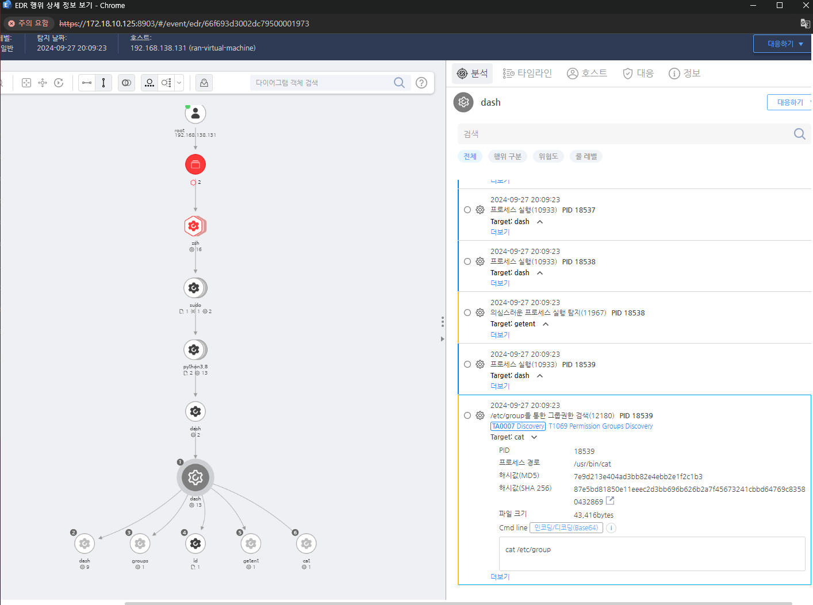

T1069.001.01 Permission Groups Discovery: Local Groups
D3FEND
MITRE ATT&CK 액션을 기준으로 대응 방안을 작성
Detection
cat 커맨드에 "/etc/group"가 포함 된 것을 탐지한다.
Detection(EDR)

Response
auditd 또는 syslog 설정을 통해 cat /etc/group 및 getent 명령어 실행을 모니터링하여 비정상적인 접근을 탐지한다.
Mitigations
도메인 관리자 그룹에 대한 액세스 제한 (M1028 - Configuration Management)
- 도메인 관리자 그룹에 대한 직접적인 액세스 제한 및 최소 권한 원칙 적용
- 도메인 관리자 그룹에 불필요한 사용자 계정 추가를 방지하고, 해당 그룹을 필요한 사람만 접근할 수 있도록 제한
- 도메인 관리자 그룹에 접근할 수 있는 사용자 계정을 최소화하여 공격자가 도메인 관리자 그룹을 탐지하거나 악용하는 가능성 줄이기
그룹 멤버십 감사 및 모니터링 (M1047 - System Logging & Monitoring)
- Active Directory에서 도메인 관리자 그룹의 변경 사항을 모니터링하고 로그를 기록
- AD 그룹 멤버십 감사를 활성화하여 도메인 관리자 그룹의 멤버십 변경을 실시간으로 추적하고 알림
- 로그 관리 솔루션을 통해 도메인 관리자 그룹의 권한 변화 및 비정상적인 접근을 감시
도메인 관리자 그룹에 대한 접근 통제 정책 강화 (M1035 - Access Control)
- 도메인 관리자 계정에 대한 계정 잠금 정책을 적용하여 불법적인 접근을 차단
- 도메인 관리자 그룹의 사용을 엄격하게 제한하고, 하위 관리자의 권한 분리
- 다단계 인증(MFA)을 통해 도메인 관리자 계정의 접근 시 강력한 인증 절차를 요구하여 무단 접근 방지
Active Directory 권한 분리 및 역할 기반 액세스 관리 (RBAC) (M1028 - Configuration Management)
- Active Directory에서 역할 기반 액세스 관리(RBAC)를 사용하여 도메인 관리자 권한을 세분화하고, 최소 권한 원칙을 강화
- 도메인 관리자 권한을 필요한 사용자로 제한하고, 그 외의 사용자는 세분화된 권한만 부여
- 그룹 정책을 통해 도메인 관리자 권한의 무단 상승을 방지하고 권한 상승 경로를 차단
AD 환경의 감사 및 보안 강화 (M1030 - Patch Management)
- Active Directory 및 관련 시스템에 대한 보안 패치를 정기적으로 적용하여 취약점 악용을 방지
- AD 보안 설정 강화 및 보안 감사 로그 활성화를 통해 그룹 내 비정상적인 활동을 신속하게 탐지
- 불필요한 권한을 제거하여 권한 상승을 위한 공격 경로를 최소화
네트워크 세분화 및 접근 제한 (M1045 - Network Segmentation and Restriction)
- 도메인 관리자 계정에 대한 접근을 네트워크 레벨에서 제한하여 공격자가 내부 네트워크에서 AD 그룹을 검색하는 것을 차단
- 네트워크 세분화를 통해 중요한 시스템과 서버에 대한 접근을 제한하고, 도메인 관리자 권한을 가진 시스템을 보호
그룹에 대한 신뢰할 수 있는 사용자만 포함 (M1038 - Execution Prevention)
- 도메인 관리자 그룹의 사용자는 신뢰할 수 있는 관리자만 포함하고, 불필요한 서비스 계정이나 권한을 최소화
- 그룹 정책을 통해 정상적인 계정 외에 도메인 관리자 그룹에 대한 추가 사용자를 제한
보안 교육 및 인식 향상 (M1019 - Awareness and Training)
- 도메인 관리자 그룹의 역할 및 권한에 대해 관리자에게 교육하여 그룹에 대한 무단 액세스를 방지하고, 관리자가 권한 상승 시도를 적시에 탐지할 수 있도록 지원
- 보안 인식 교육을 통해 관리자가 도메인 관리자 그룹의 변화 및 활동을 주의 깊게 모니터링하도록 교육
Affected Techniques
Action 실행시 함꼐 영향을 받는 다른 Techniqes
| D3FEND |
| D3-SCA System Call Analysis |
| D3-PM Platform Monitoring |
| D3-SJA Scheduled Job Analysis |